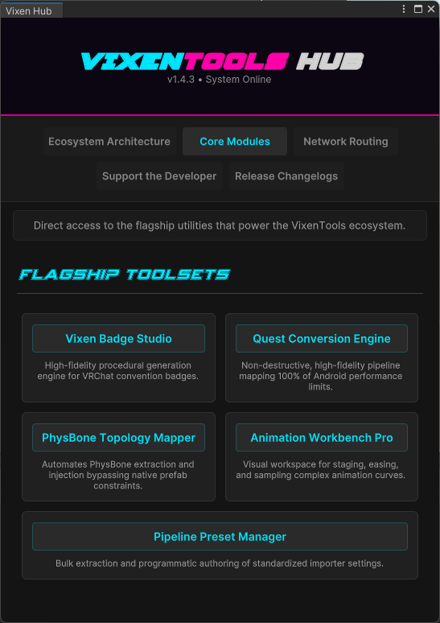
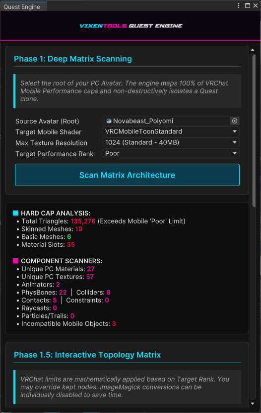
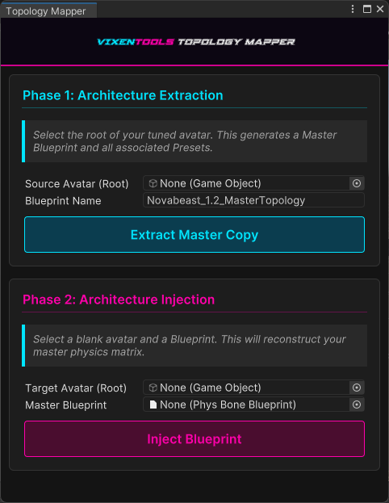
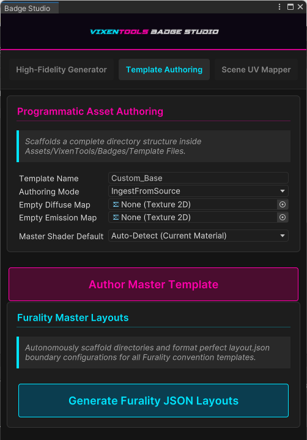
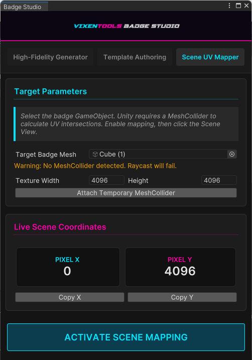
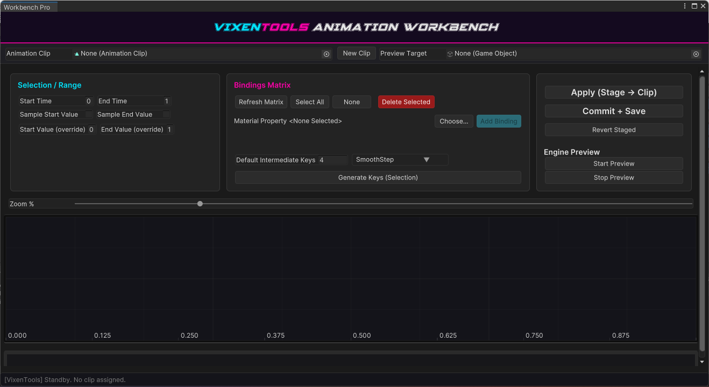
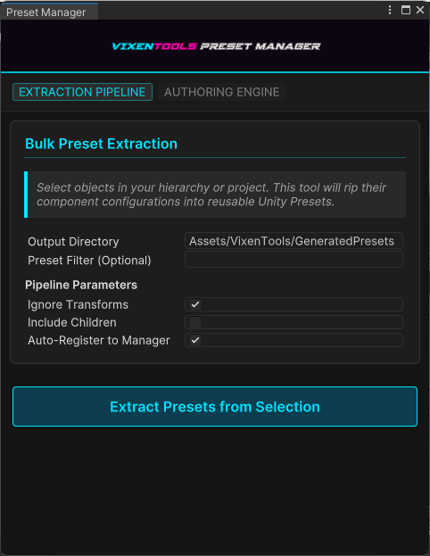

Ecosystem Architecture
Engineered entirely on Unity's modern UI Toolkit. This is a comprehensive suite of custom Editor utilities focused strictly on High-Fidelity Avatar Pipeline & Topology Architecture. Click any interface below to expand the preview.

Vixen Hub
Your central control matrix. A dynamic 5-tab developer dashboard driven by a native Markdown-to-UIToolkit parser.
- Dynamic DOM Bridges: Interfaces instantly sync variable states and spawn interactive matrices without triggering Editor-wide hang-ups.
- Action Delegates: The master launchpad for the entire suite, seamlessly routing C# execution commands directly from parsed markdown links.

Quest Conversion Engine
A fully non-destructive, high-fidelity pipeline for converting PC avatars to Android/Quest, mapped natively to VRChat's mobile performance limits.
- High-Fidelity Downsampling: Intercepts Unity's native importer to route textures through a Magick.NET Lanczos pipeline with UnsharpMask recovery.
- Deep Heuristic Culling: Mathematically hunts down globally banned mobile components and calculates skeletal depth to strip leaf bones seamlessly.
Absolute Parity: Visual proof of the Quest Conversion Engine's Magick.NET texture downsampling and Advanced Material Translation preserving micro-contrast and custom shader routing on mobile hardware.

PhysBone Topology Mapper
The flagship utility for physics management. Eliminates the human error of manually dragging and dropping colliders across avatar iterations.
- Master Blueprints: Automates PhysBone architecture through an Extraction/Injection process utilizing
AnimationUtility.CalculateTransformPath. - Graceful Degradation: Safe UI fallback states protect the project if the VRChat SDK goes missing.

Vixen Badge Studio
A high-fidelity, CSS-driven procedural generation engine for authoring and compositing multi-channel VRChat convention badges.
- Emissive Compositing: Automatically flattens and strips alpha channels during
_EMImask creation to prevent blowout loops in VRC bloom. - Universal Shader Targeting: A heuristic material engine that automatically detects and injects generated parameters into Poiyomi Toon, lilToon, VRChat Mobile, and legacy convention shaders.

Live Scene UV Mapper
An extension of the Badge Studio that hijacks the Unity Scene View to map custom convention coordinates in 3D space interactively.
- Interactive Raycasting: Mathematically inverts 3D hits on the MeshCollider into ImageMagick pixel space.
- Non-Destructive Workflow: Temporarily suspends native gizmos and safely destroys temporary colliders upon exit.

Animation Workbench Pro
An advanced visual workspace for staging, easing, and sampling complex animation curves and multidimensional material property bindings.
- Explicit Intent Paradigm: Built with strict safeguards to prevent the pipeline from destructively hijacking live scene data without your explicit command.
- Runtime Math Library: Highly optimized
EasingFunctions.csintegration.

Pipeline Preset Manager
Enforce strict project consistency by automating the mundane configuration of your assets.
- Phantom Asset Architecture: Handles bulk extraction of configuration presets from existing assets to programmatically author standardized importer settings.